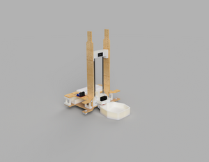

Projects

Megatronics (ME 210) Group Project
Worked with a group of 4 to design and build a simple robot that could move balls around a course. We designed and built three progressively complex iterations of the robot in 2.5 weeks.
View Project
Classical Machine Vision Satellite Orientation Algorithm
The goal was to identify the relative position and orientation of Satellite A based on a picture from Satellite B. In order to generate test data, I used the 3D modeling software Blender to create photorelistic images of a cubsate with Leds on the corners. I then wrote a classical machine vision algorithm using openCV to crop in on the Satellite and apply a PNP algorithm to identify the relative position and rotation.

2D plotter robot from scratch
Worked on this plotter robot as a final project for CS107E. All the software was written from scratch on a bare metal raspberry pi by myself and a partner. I personally did all of the mechanical design and fabrication.

Rubin Observaotry Deblending Emulator
I used PyTorch to develop different neural network architecture to emulate the Large Synoptic Survey Telescope (LSST) deblending pipeline in order to better understand systemic bias in weak lensing probes as a result of unrecognized galaxy-galaxy blends.
View Project
American Sign Language 3D CNN
My partner and I retrained the final layers of a 3D convolutional neural network model to identify American sign language words. I then spun up a Flask backend and React frontend and built a simple website that allowed users to record a video of themselves signing a word and the model would output its top five guesses.
View Project